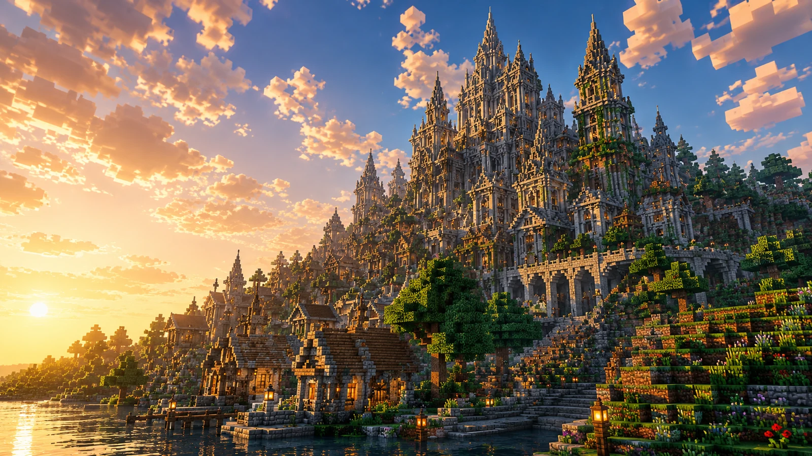

02 / Light
明るい面と影の面を分けて、石の表情を作る。
光源を置く前に、どこを暗く残すかを決めると、同じ素材でも建物に深さが出ます。夕暮れや夜景を意識すると配置が決めやすいです。

テーマを決め、遠景の輪郭を置き、最後に入口まわりを締める。
順番を意識するだけで、巨大建築でも迷いが減ります。
Gallery
塔の高さ、屋根の角度、基壇の幅を先に置くと、建築の主役がぶれません。装飾はシルエットが固まってから重ねます。
光源を置く前に、どこを暗く残すかを決めると、同じ素材でも建物に深さが出ます。夕暮れや夜景を意識すると配置が決めやすいです。
通路、階段、柵、灯りを入口の近くから整えると、全部を飾り切らなくても「使われている建築」に見えます。
Build Guide
神殿、城、倉庫など役割を先に決めると、必要な大きさと装飾の方向がぶれません。最初に「誰が使う建物か」を一言で決めます。
塔、屋根、壁の高さをざっくり配置し、遠くから見たときの主役を決めます。細部より先に、外形の強さを確認します。
石、木、装飾材を増やしすぎると全体が散ります。主素材、補助素材、差し色だけに絞ると大きな建築でもまとまりやすいです。
柱の間隔、窓の幅、灯りの位置をそろえると、巨大でも雑多に見えません。同じ単位を繰り返して、建物にリズムを作ります。
入口、階段、通路にだけ光を集めると、視線と移動の流れが自然にまとまります。最後は夜に見直して、暗さと明るさの差を調整します。